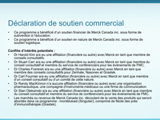

|
Déclaration de soutien commercial
 Cette diapositive présente les informations relatives au soutien commercial dont a bénéficié ce programme, incluant les affiliations financières de chaque membre des comités scientifique et pédagogique ayant participé à l'élaboration de ce programme. |
|
|